Neurotoxicité, hématotoxicité et toxicité endocrinienne
Les neurones, les cellules sanguines et le système endocrinien sont particulièrement vulnérables aux toxiques en raison de leur métabolisme intense, de leur grande consommation d'oxygène ou de leur rôle régulateur fin. Plusieurs Métaux toxiques en milieu de travail et Solvants ciblent simultanément ces trois systèmes. En mine, on cible surtout : Mn (parkinsonisme du soudeur), Pb (neuropathie, anémie), CO post-tir (carboxyhémoglobine) et solvants d'atelier (SPO chronique).
Table des matières
Neurotoxicité
Le système nerveux est séparé en SNC (cerveau, tronc cérébral, moelle) et SNP (nerfs, ganglions).
{kind=link}
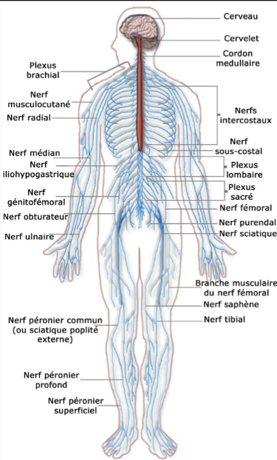
Toucher l'image pour l'agrandir{kind=link}
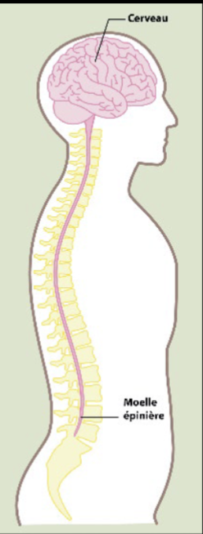
Toucher l'image pour l'agrandir{kind=link}
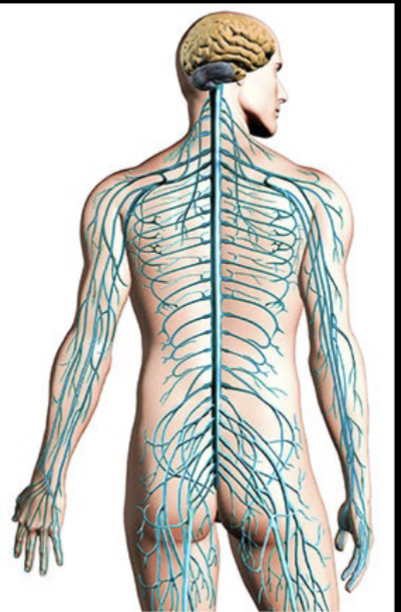
Toucher l'image pour l'agrandirCellules : neurones (transmission de l'influx, peu réplicables) et cellules gliales (soutien, myéline).
{kind=link}
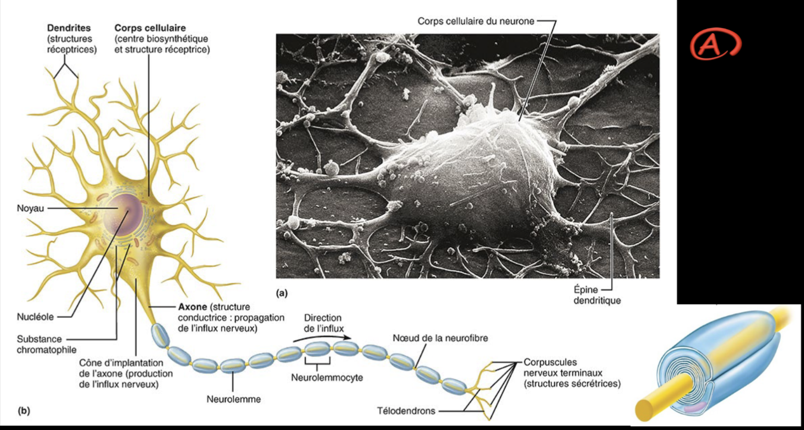
Toucher l'image pour l'agrandir4 grandes catégories d'atteintes
{kind=link}
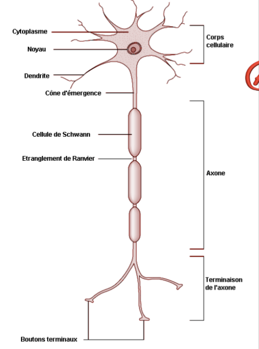
Toucher l'image pour l'agrandir| Catégorie | Mécanisme | Exemples d'agents |
|---|---|---|
| Neuronopathies | Mort des corps cellulaires des neurones | Méthylmercure (Minamata), MPTP (Parkinson-like), CO sévère |
| Axonopathies | Dégénérescence axonale (« dying back ») | n-Hexane → 2,5-hexanedione, acrylamide, organophosphorés (OPIDN), CS2 |
| Myélinopathies | Démyélinisation | Plomb (gaine de myéline), triéthylétain, hexachlorophène |
| Toxicité, dose-réponse et DL50 de la neurotransmission | Blocage des récepteurs ou enzymes | Organophosphorés et carbamates (inhibition des cholinestérases), nicotine, organomercuriels |
{kind=link}
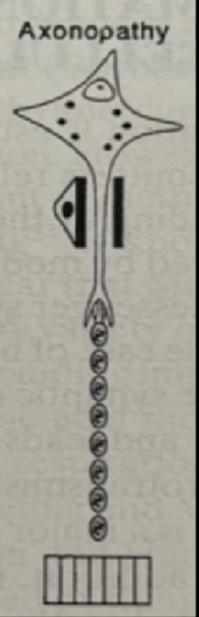
Toucher l'image pour l'agrandirEffets selon la dose et la durée
| Exposition | Manifestation typique |
|---|---|
| Aiguë faible dose | Effets narcotiques de solvants : céphalées, étourdissements, ivresse, somnolence |
| Aiguë forte dose | Coma, convulsions, mort (CO, H2S, Solvants) |
| Chronique faible dose | Atteinte progressive : neuropathie périphérique, syndrome psycho-organique (SPO), parkinsonisme |
Agents emblématiques
- Manganèse : parkinsonisme (« manganisme »), soudeurs, mineurs. CIRC : suspect.
- Plomb : neuropathie périphérique, encéphalopathie chez l'adulte ; déficit cognitif irréversible chez l'enfant.
- Mercure (métal et organique) : tremblement, érétisme (« chapelier fou »), troubles cognitifs ; méthylmercure traverse BHE.
- Solvants : éthanol, benzène, toluène, xylène, hexane, CS2, perchloroéthylène (SPO chronique).
- Organophosphorés (pesticides) : crise cholinergique aiguë + neurotoxicité retardée.
Voir Multiexposition aux contaminants pour les effets bruit + ototoxiques (CO, Pb, solvants aromatiques).
Hématotoxicité
Le sang transporte O2, nutriments et déchets. Hématopoïèse dans la moelle osseuse.
{kind=link}
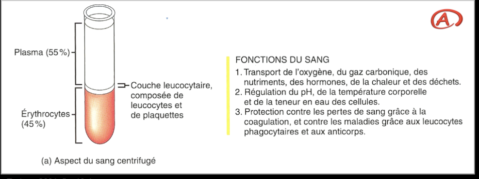
Toucher l'image pour l'agrandir{kind=link}
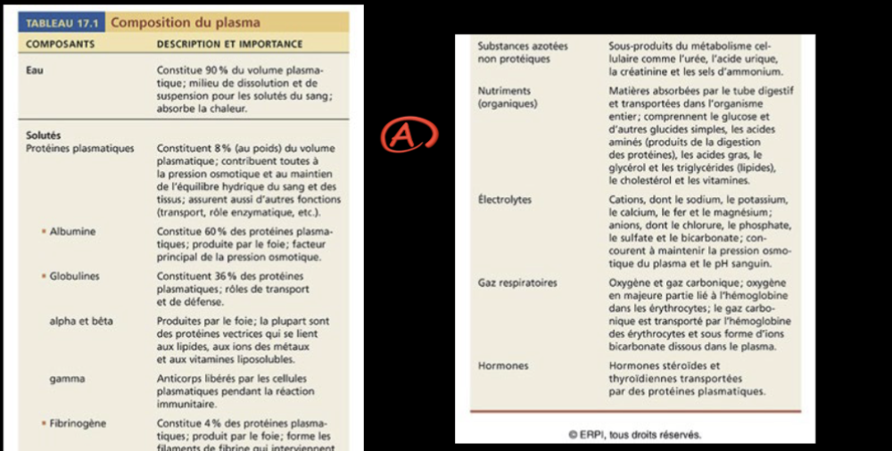
Toucher l'image pour l'agrandir{kind=link}
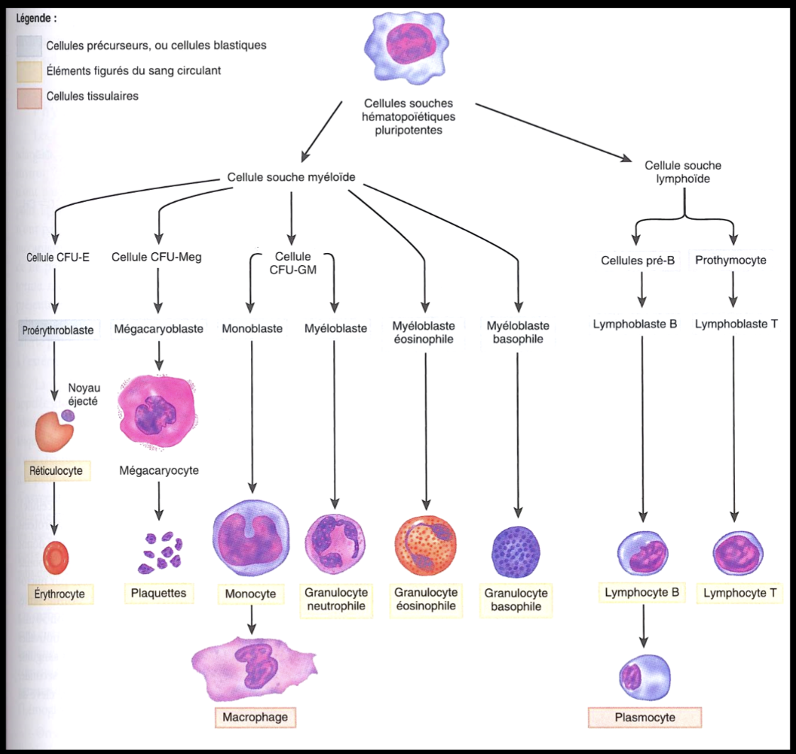
Toucher l'image pour l'agrandir{kind=link}
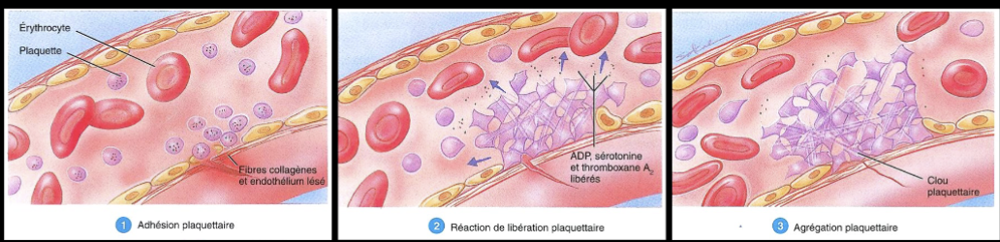
Toucher l'image pour l'agrandirÉléments figurés
| Cellule | Rôle | Atteinte possible |
|---|---|---|
| Globules rouges (érythrocytes) | Transport O2 via hémoglobine | Anémie, hémolyse, méthémoglobinémie, carboxyhémoglobine |
| Globules blancs (leucocytes) | Immunité | Aplasie, leucémies |
| Plaquettes | Coagulation | Thrombopénie |
Atteintes du transport d'O2
| Mécanisme | Agent | Conséquence |
|---|---|---|
| Carboxyhémoglobine (HbCO) | Asphyxiants simples et chimiques | Affinité 250x > O2 ; hypoxie tissulaire |
| Méthémoglobine (MetHb) | Nitrites, nitrobenzène, aniline | Fe2+ → Fe3+, incapable de fixer O2 |
| Inhibition cytochrome oxydase | Cyanures, H2S | Blocage respiration cellulaire |
| Hémolyse | Arsine (AsH3), naphtaline | Destruction des GR |
Atteintes de la moelle (médullotoxicité)
- Benzène : aplasie médullaire, leucémie myéloïde aiguë (CIRC 1). VEMP très bas. Voir Solvants.
- Plomb : anémie (inhibition synthèse hème, ALA-déshydratase).
- Radiations ionisantes : aplasie, leucémies.
Bio-indicateurs
- HbCO pour le CO (à doser rapidement après exposition).
- Plomb sanguin (Pb-S) : surveillance médicale obligatoire au Québec en fonction du seuil.
- ALA urinaire, ZPP (zinc-protoporphyrine) : indicateurs d'effet du Pb.
Perturbateurs endocriniens
Le système endocrinien régule croissance, métabolisme, reproduction. Glandes principales : hypothalamus-hypophyse, thyroïde, surrénales, pancréas, ovaires/testicules.
{kind=link}
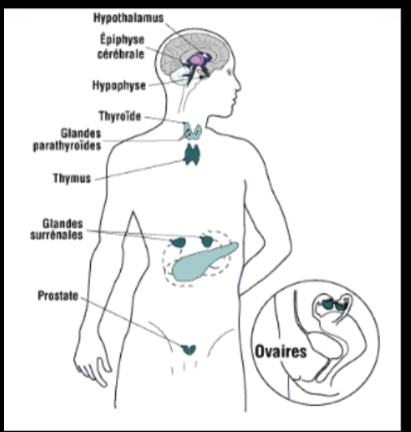
Toucher l'image pour l'agrandirPerturbateur endocrinien = substance exogène qui altère les fonctions du système endocrinien (mimétisme hormonal, blocage de récepteur, modification de la synthèse/transport/métabolisme des hormones).
{kind=link}
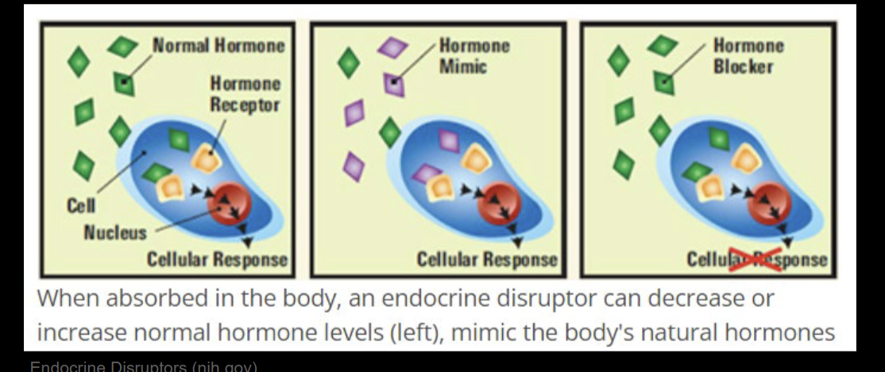
Toucher l'image pour l'agrandir| Mécanisme | Exemples |
|---|---|
| Œstrogéno-mimétique | Bisphénol A (BPA), phtalates, DDT, certains PCB |
| Anti-androgénique | Vinclozoline (fongicide), DDE |
| Thyréotoxique | PCB, perchlorate, brome |
| Stéroïde-mimétique | Hormones de croissance, contaminants pharmaceutiques |
Préoccupations particulières : fenêtres de vulnérabilité (grossesse, puberté), effets transgénérationnels, faibles doses chroniques. Voir Pesticides pour les Pesticides perturbateurs endocriniens, et Mutagénicité et cancérogénicité pour les cancers hormono-dépendants.
Application terrain
| Effet | Source minière typique | Travailleur concerné |
|---|---|---|
| Parkinsonisme (manganisme) | Fumées de soudage à l'arc, ferromanganèse | Soudeur, monteur structures |
| Neuropathie périphérique | Hexane des dégraissants, CS2 | Mécanicien d'atelier |
| Encéphalopathie au Pb | Peintures anciennes, soudage Pb, démolition | Démolition, ferraillage |
| Syndrome psycho-organique (SPO) | Solvants chroniques peintres, mécaniciens | Atelier mécanique, peinture |
| Carboxyhémoglobinémie (HbCO) | CO post-tir, gaz d'échappement diesel mal captés | Foreur, profil RPS et leadership de chantier, opérateur souterrain |
| Anémie | Pb sanguin élevé chronique | Démolition |
| Méthémoglobinémie | Eaux contaminées nitrites, fertilisants en surface | Surface |
La surveillance biologique est l'outil clé : Pb-S au moins annuel pour les postes à Pb (seuil CNESST), HbCO ponctuel en cas de symptôme post-tir, As urinaire pour les sites d'or à arsénopyrite, Mn sanguin (moins fiable, mais documentation utile) pour les soudeurs intensifs.
Ressources
| Document | Type | Source |
|---|---|---|
| Protocole de surveillance Pb (CNESST, rôles et pouvoirs) | Programme | CNESST |
| Tests neurocomportementaux (Q16, NES) | Outil | IRSST, INRS |
| IBE booklet (BEIs ACGIH) | Référentiel | ACGIH |
| Liste perturbateurs endocriniens (EDC) | Référentiel | ECHA, INRS |
Articles wiki connexes
Pages qui pointent ici (18)
- 🎯 Démarrage rapide, conseiller SST Toxicologie
- 🏠 Wiki Toxicologie, mines Toxicologie
- Asphyxiants simples et chimiques Hygiène industrielle
- Asphyxiants simples et chimiques Toxicologie
- Hépatotoxicité et néphrotoxicité Toxicologie
- Métaux toxiques en milieu de travail Hygiène industrielle
- Métaux toxiques en milieu de travail Toxicologie
- Multiexposition aux contaminants Hygiène industrielle
- Multiexposition aux contaminants Toxicologie
- Pesticides Toxicologie
- Solvants organiques Hygiène industrielle
- Solvants organiques Toxicologie
- Surveillance biologique des métaux en mine Hygiène industrielle
- Surveillance biologique des métaux en mine Toxicologie
- Toxicité du système respiratoire Toxicologie
- Toxicité par organe Toxicologie
- Toxicité, dose-réponse et DL50 Toxicologie
- Toxicologie clinique Toxicologie